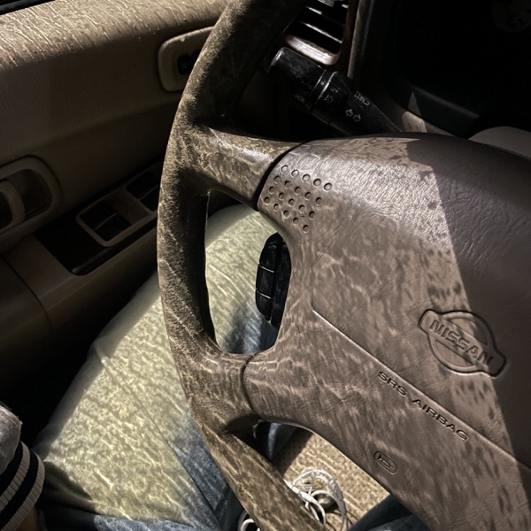
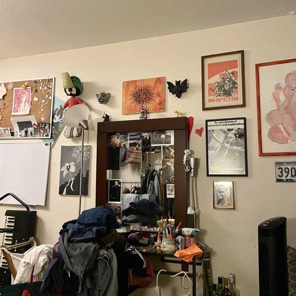
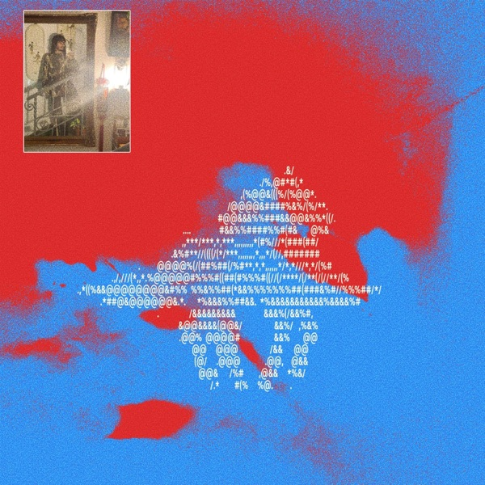

(no) me quiero ir
Sencillo · 2026
Ver el video oficial ↗Lo más nuevo de Saudaji
¿Dónde escuchas?

Sencillo · 2026
Ver el video oficial ↗
Sencillo · 2026

EP · 4 canciones · 2025
También en Bandcamp SoundCloud
← saudaji.com